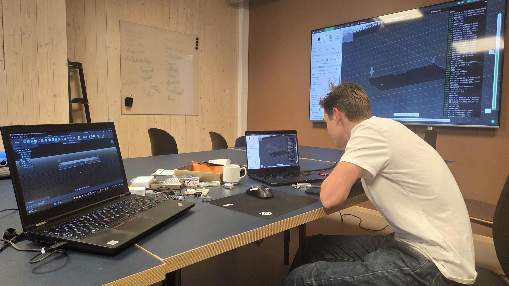
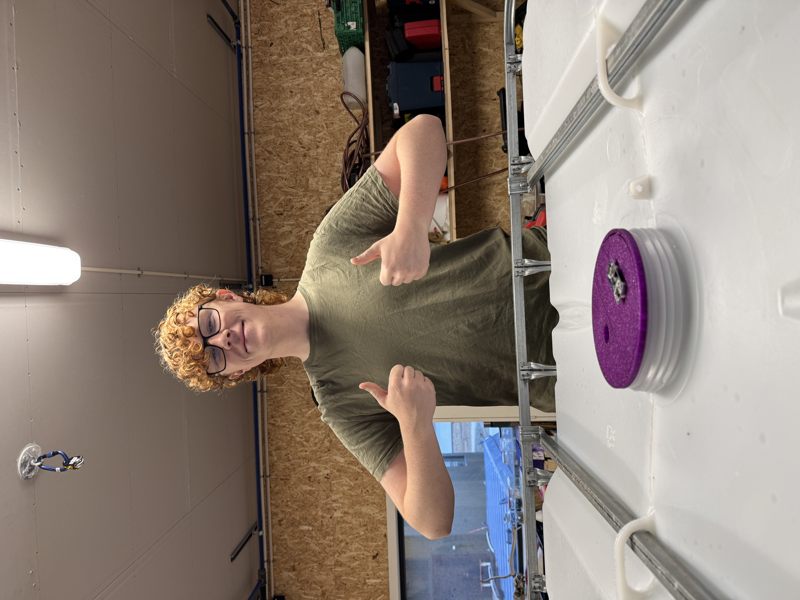
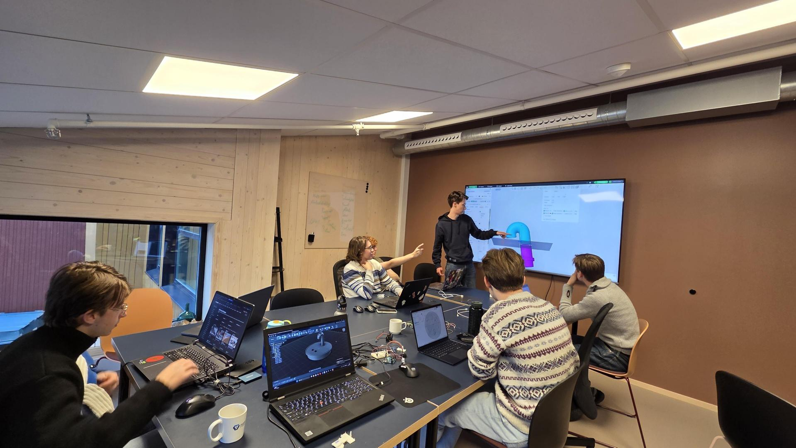
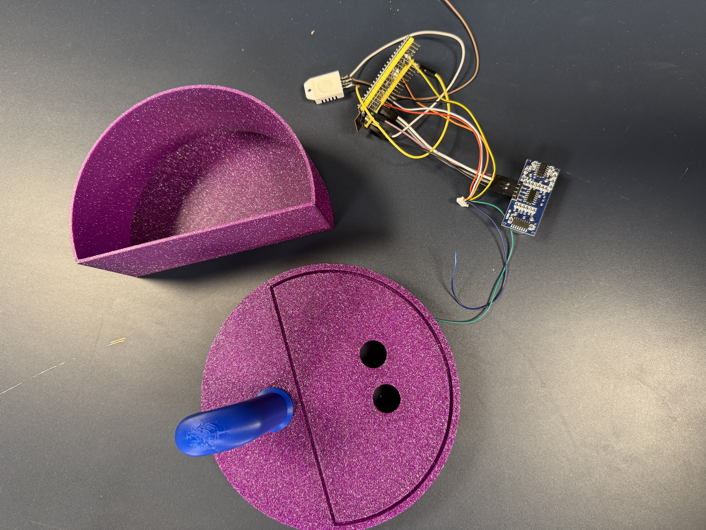

Prosjekt Vanntank
Intro
På skolen har vi en vanntank i garasjen. Denne får vi fra bryggeriet på Svalbard sånn at vi slipper å fylle vann på butikken. Det er en del logistikk rundt det å få tankene, så vi ville gjøre det litt lettere.
Målet er å bruke en esp32 og en ultralydsensor for å måle vannstanden, og dermed sende data sånn at det er lettere for administrasjonen å få oversikt over hvor mye vann det er i tanken sånn at den kan byttes ut når den begynner å bli tom.
I tillegg er det et godt verktøy for elever sånn at de slipper å gå ut for å fylle vann og så finne ut at det er tomt.
3
Linjedager
7
Elever + 1 lærer
2
Forelesninger i CAD ved Tian
Se på prosjekter og ta mål av IBC-tanken
Vi såg på på prosjekter. Tok dermed mål av IBC-tanken. Vi fortsatte så med en liten forelesning i Fusion 360 ved Tian. Vi printet så første del.
Videre forelesning i CAD og litt progging
Vi fortsatte på forelesning og kom fram til et produkt som kunne printes ferdig. Videre såg vi litt på hvilke komponenter og fant ut hvordan vi ville at prosjektet skulle fungere.
Progging
Jobbet videre på programmering og prøvde å få til Wifi-funskjonalitet.
Forelesninger med Tian

Bilder


